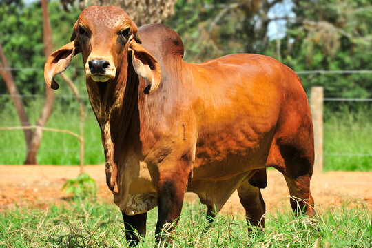
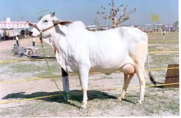
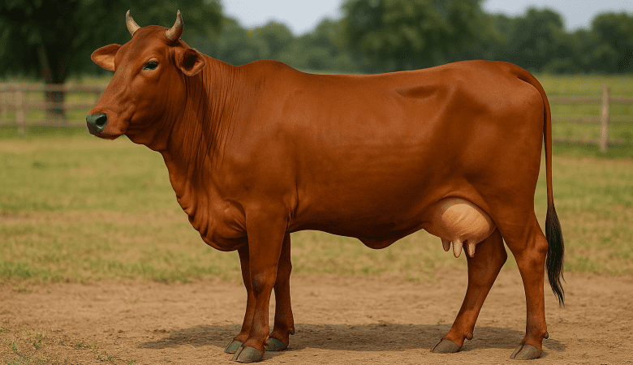
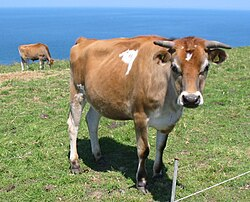
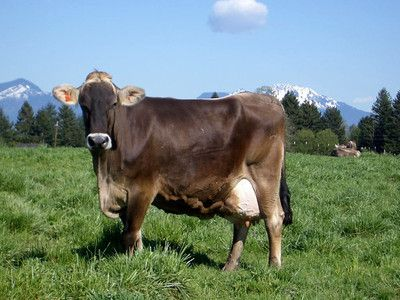
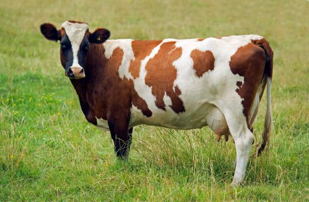

CowCare Hub
CowCare HubCow-Breeds
Cow breeds reflect the rich diversity of cattle found across the world. Each breed has unique characteristics such as milk production, physical features, and climate adaptability. Indian breeds are known for their strength and heat resistance, while foreign breeds are famous for high milk yield. Together, they play a vital role in dairy farming and agriculture.
 Indian-cow-breeds
Indian-cow-breeds
🐮Gir CowGir cow is a famous Indian dairy breed originating from Gujarat. It is known for its high milk production, strong immunity, and heat resistance. With its distinctive long ears and curved horns, the Gir cow is widely used in dairy farming and breed improvement programs.
|
 |
|---|
🐮Sahiwal cowSahiwal cow is one of the best dairy breeds of India and Pakistan. It is well known for its good milk production, calm nature, and ability to tolerate hot climates. Sahiwal cows are widely used in dairy farming because of their adaptability and strong resistance to diseases.
|

|
🐮tharparkar cowTharparkar cow is a well-known Indian dairy breed famous for its strength and adaptability to dry and desert regions. It is a dual-purpose breed, used for both milk production and farming work. Tharparkar cows are hardy and can survive in harsh climatic conditions.
|
 |
🐮Red shindhiRed Sindhi cow is a popular dairy breed known for its good milk production and strong adaptability to hot climates. It is widely used in dairy farming due to its disease resistance and ability to survive in tropical regions.
|
 |
Foreign-cow-breed
🐮Holstein cowHolstein is one of the highest milk-producing dairy breeds in the world. It is widely used in commercial dairy farming due to its excellent milk yield and large body size
|
 |
|---|
🐮Jersey cowJersey cow is a popular dairy breed known for producing high-quality milk with rich butterfat content. It is smaller in size and requires less feed compared to other large breeds.They are highly popular among small-scale farmers because they require less feed but produce high-quality milk.
|
 |
🐮Brown Swiss cowBrown Swiss is one of the oldest and most reliable dairy breeds in the world. It is known for its strong body structure, long lifespan, and good-quality milk production. This breed is highly valued in commercial dairy farming.
|
 |
🐮Ayershire cowAyrshire cow is a well-known dairy breed famous for its balanced milk production and strong adaptability. It is a hardy breed that performs well in different climatic conditions and is widely used in dairy farming.Ayrshire cows are efficient grazers and can produce quality milk even on moderate feed.
|
 |
Comparision Table
| Criteria | Indian Breeds | Foreign Breeds |
|---|---|---|
| Average milk Yield | 8-20 liters per day | 18-35 liters per day |
| Milk Fat Content | Highest Fat Percentages | Moderate Fat Percentages |
| Both Good For Ghee & Butter | ||
| Maintenance cost | Low Maintenance Cost | Higher Maintenance Cost |
| Lifespan & Durability | Long-Lasting & hardy | Good lifespan but require proper care |
Both Indian and foreign cow breeds play an important role in dairy farming. Indian breeds are well known for their strong immunity and adaptability to hot climates, while foreign breeds are popular for their high milk production. Understanding the features and benefits of each breed helps farmers choose the right cattle according to their needs and environment. Proper care and awareness can improve productivity and support sustainable dairy development.